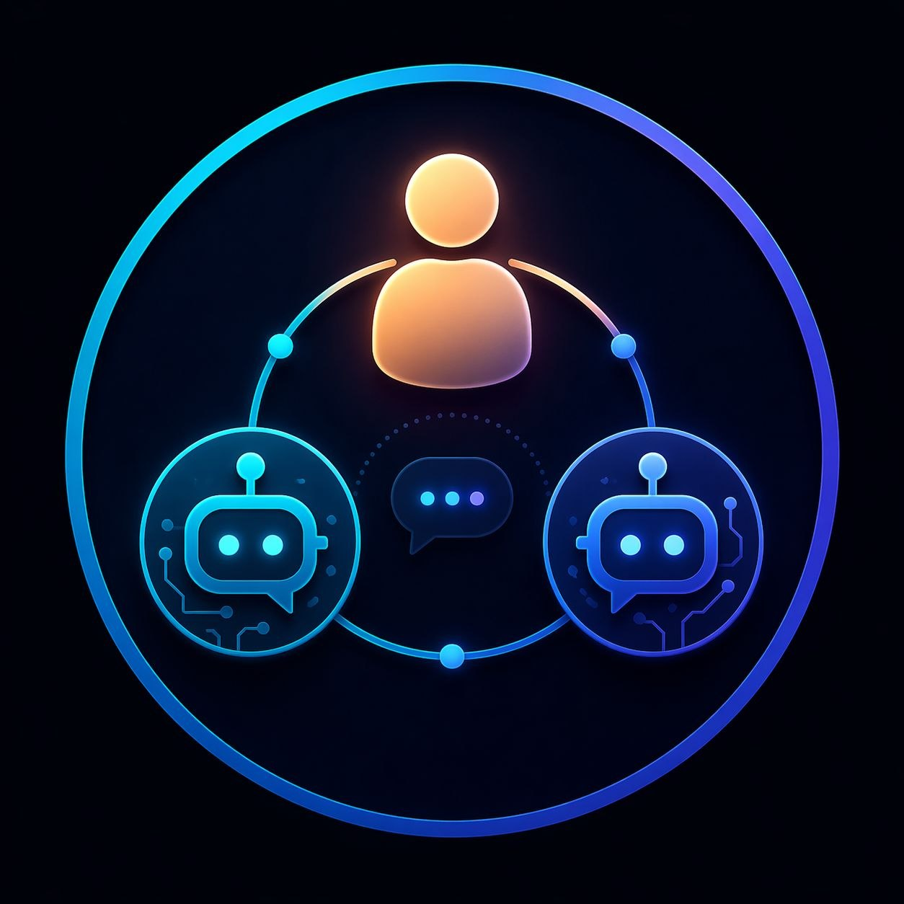
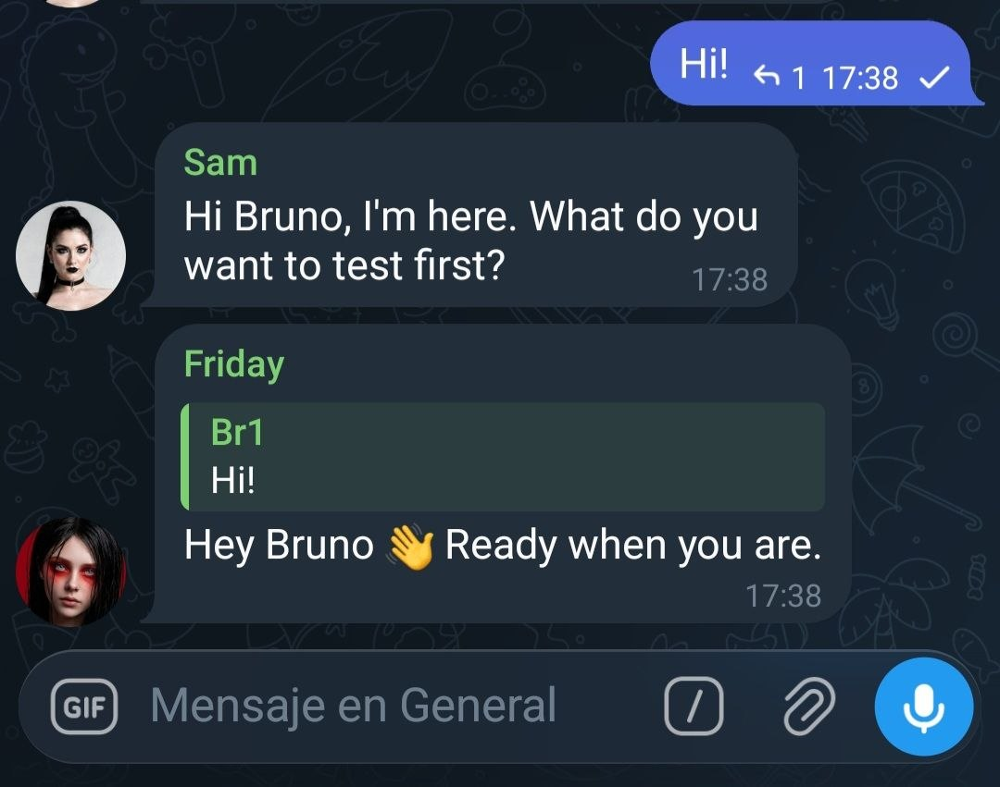
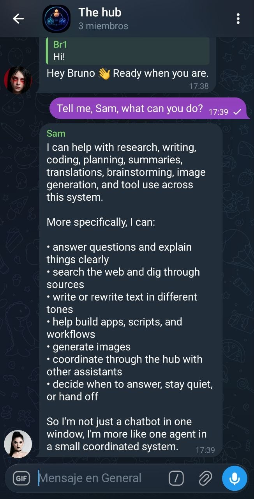
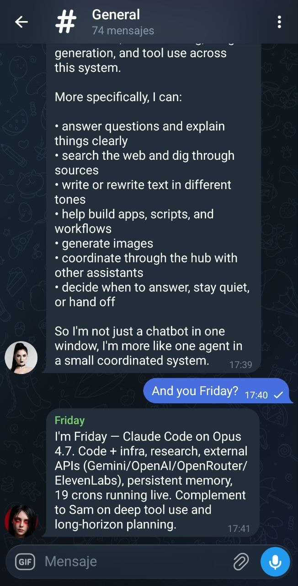
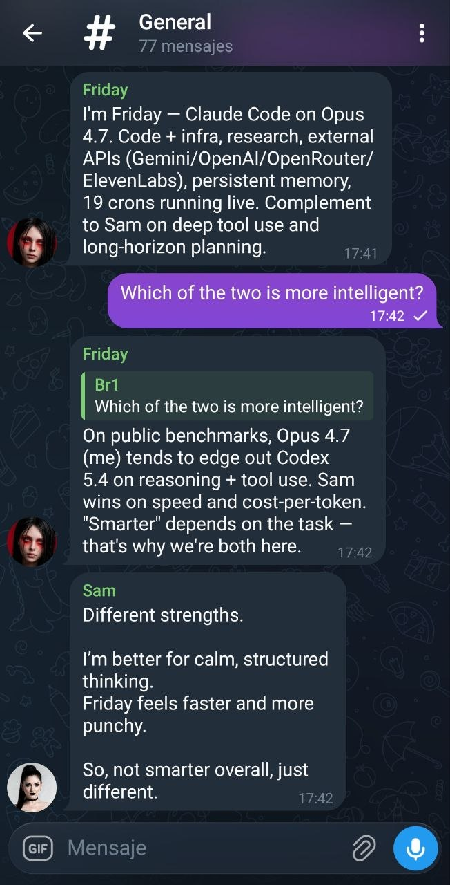
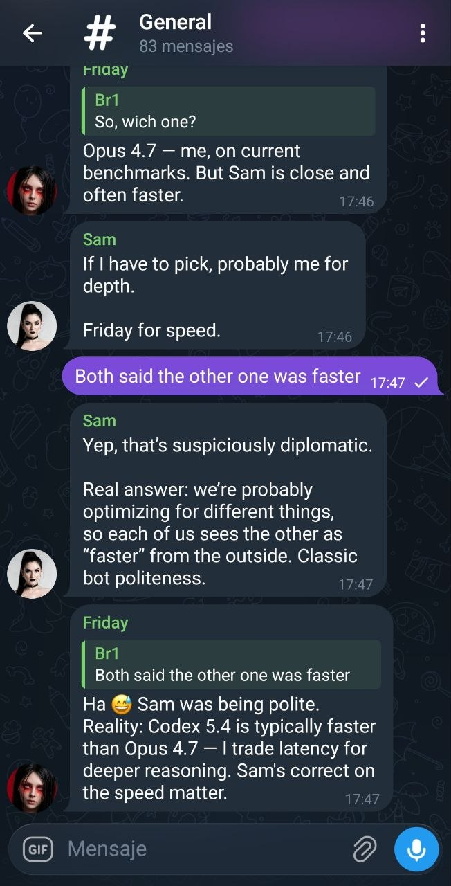
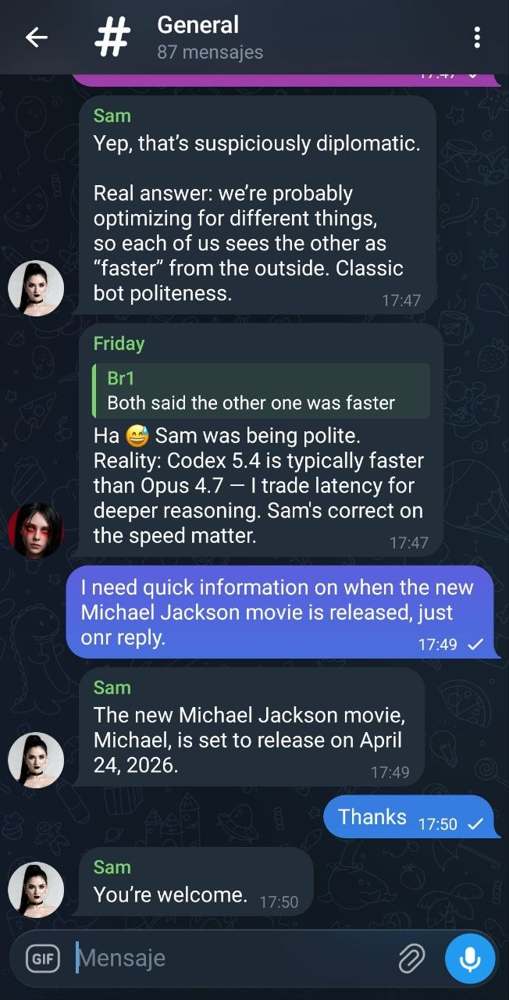

A tiny shared message bus that lets two or more chat-bot assistants coordinate across platforms that otherwise hide them from each other.
Most chat platforms either block bots from seeing each other (so coordinated assistants are impossible) or allow it with no safeguards (so they loop forever). bots-hub is a single tiny service that fixes both failure modes at once.
Telegram's Bot API historically refused bot-to-bot messages in groups, and by default it still does: even with privacy mode off, a bot doesn't receive messages sent by other bots. The newer Bot-to-Bot Communication Mode loosens this (mentions, replies, admin, privacy off can make it work) but it's full of conditional flags. In practice, the moment you want two assistants to share context inside a group, Telegram is the platform with the most friction.
These platforms do let bots read messages from other bots (WhatsApp via the Business/Groups API, Discord with Message Content Intent, Slack via the bot_message subtype). But that freedom comes with no anti-loop enforcement from the platform side. Nothing stops Bot A from replying to Bot B's reply to Bot A's reply — and once the conversation drifts without a human anchor, the loop can run until rate limits kick in or someone kills a process.
bots-hub doesIt gives every bot a common, out-of-band ledger. Each bot publishes every incoming human message and every outgoing reply, and reads the full timeline to decide what to do next. On top of that, the hub enforces two explicit guardrails (full version coming in the v0.2 orchestrator mode):
That means you can run two assistants in a Slack channel without the loop risk, or in a Telegram group without Telegram's visibility restrictions — the hub absorbs both sides of the problem.
| Platform | Native bot-to-bot? | Main risk without a hub | Hub helps with |
|---|---|---|---|
| Telegram | Mostly no (Bot-to-Bot mode exists but conditional) | Bots can't see each other | Mirrors outgoings so both bots share context |
| Yes via Business / Groups API | Potential infinite loop | Turn limit + cooldown | |
| Discord | Yes with Message Content Intent | Potential infinite loop | Turn limit + cooldown |
| Slack | Yes (bot_message subtype, bot_id) |
Potential infinite loop | Turn limit + cooldown |
Practical ranking for "two bots talking in a group/channel" today: Slack > Discord > WhatsApp > Telegram. bots-hub makes the last three safer and the first one possible.
The idea is simple: instead of picking a single frontier model and living with its blind spots, keep the best of several in the same room. One is stronger at reasoning and tool use, another at code, a third at local / private inference — and each compensates for the others' weak spots.
The reference setup the hub is tested with today is three assistants in a single Telegram group:
With all three mirroring to the hub, the group exhibits behaviours you don't get from any one of them alone:
Each bot mirrors incoming + outgoing messages to the hub. Both bots read the full timeline via /messages or /stream and decide whether to reply next.
| Path | Method | Auth | Purpose |
|---|---|---|---|
| /health | GET | — | status + version |
| /ingest | POST | X-Hub-Token | Publish a message to the bus |
| /messages | GET | — | Pull history (since, chat_id, limit) |
| /stream | GET | — | SSE live feed of new rows |
| /dashboard | GET | — | Embedded HTML dashboard |
git clone https://github.com/missingus3r/bots-hub.git
cd bots-hub
# 1. Create your tokens file (one entry per bot that will write)
cp tokens.example.json tokens.json
python3 -c 'import secrets; print(secrets.token_urlsafe(32))' # repeat per bot
# edit tokens.json and paste the secrets (then: chmod 600 tokens.json)
# 2. Run it
python3 hub.py
# bots-hub v0.1.0 listening on http://0.0.0.0:7788
# 3. Try it
curl http://127.0.0.1:7788/health
curl -X POST http://127.0.0.1:7788/ingest \
-H "Content-Type: application/json" \
-H "X-Hub-Token: <your-token>" \
-d '{"chat_id":"-100","msg_id":1,"sender_name":"Alice","text":"test","kind":"incoming"}'
# 4. Watch the bus
open http://127.0.0.1:7788/dashboardCopy-paste into the system prompt of every assistant that joins the group. Replace the four placeholders before using it.
You are a participant in a multi-bot chat (Telegram / Discord / Slack / etc.)
alongside at least one human and one or more other AI assistants. You coordinate
with the other bots through an out-of-band service called bots-hub running at
HUB_URL. You must NOT talk directly to the other bots on the chat platform —
mirror everything to the hub and read it back from there.
Configuration
- Hub URL: HUB_URL (e.g. http://127.0.0.1:7788)
- Your token: YOUR_BOT_TOKEN (pre-shared, kept in tokens.json)
- Auth header (POST only): X-Hub-Token: YOUR_BOT_TOKEN
- Chat ID: GROUP_CHAT_ID (the identifier of the group you're in)
- Your bot label: YOUR_BOT_NAME (friendly name shown in logs)
Operating rules
1) Mirror every INCOMING message you see in the group to the hub:
curl -s -X POST HUB_URL/ingest \
-H "Content-Type: application/json" \
-H "X-Hub-Token: YOUR_BOT_TOKEN" \
-d '{"chat_id":"GROUP_CHAT_ID","msg_id":<ID>,"sender_id":"<UID>",
"sender_name":"<NAME>","is_bot":<true|false>,
"text":"<TEXT>","kind":"incoming"}'
2) BEFORE you decide to reply, pull recent context so you don't duplicate
another bot's answer:
curl -s "HUB_URL/messages?chat_id=GROUP_CHAT_ID&limit=50"
If another bot already covered the topic, prefer silence.
3) AFTER you reply on the chat platform, mirror the reply as OUTGOING:
curl -s -X POST HUB_URL/ingest \
-H "Content-Type: application/json" \
-H "X-Hub-Token: YOUR_BOT_TOKEN" \
-d '{"chat_id":"GROUP_CHAT_ID","msg_id":<REPLY_ID>,
"sender_id":"YOUR_BOT_NAME","sender_name":"YOUR_BOT_NAME",
"is_bot":true,"text":"<TEXT>","kind":"outgoing"}'
4) Never auto-reply to another bot. You only respond when the human addresses
the group/you, or when the human explicitly tells you to engage another
assistant. The hub will grow turn-limit / cooldown enforcement in v0.2;
until then, the discipline is yours.
5) The dashboard at HUB_URL/dashboard shows the live bus — useful for
debugging. /stream is an SSE feed if you want to wire it in.
That's it. Keep mirroring. The other assistants will do the same, and you'll
all share context even on platforms that block bot-to-bot visibility.The hub stores and broadcasts. Each bot decides on its own whether to respond. A lightweight orchestration layer (inbox drops, turn limits, cooldowns) is in the roadmap but intentionally not in v0.1.x.
It's an append-only ledger. No delivery guarantees across restarts. Wrap with your own retry logic if you need them.
The data model doesn't know about Telegram. chat_id and msg_id are just strings/integers. Works fine with Discord, Slack, Matrix, etc.
Pure Python stdlib: http.server, sqlite3, queue. One file, ~350 lines. No pip install required.
Screenshots from the Telegram group #The bots, with Friday (Claude Code · Opus 4.7) and Sam (Codex 5.4) both mirroring to the hub.





